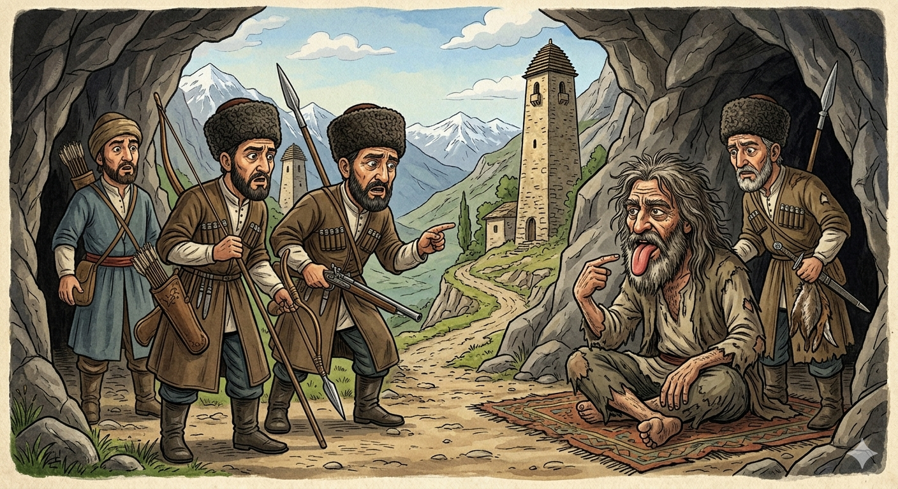

И.А. Дахкильгов. Хьехаме дувцарш - поучительные рассказы-притчи.
И.А. Дахкильгов. Хьехаме дувцарш - поучительные рассказы-притчи. Из ингушского фольклора.

ХьагӀара чу жӀали кхабар
Харцахьа-бакъахьа ший баге лееш хилар бахьанца ший юртаца тайнавац цхьа къонах. Цу юртара дӀаваха дийзад цун. Пхи-ялх шу дӀадаьннад. Юртахой гаьнна лоам лелаш, цхьан хьагӀара чу вагӀаш къонах бӀаргавейнав царна. Мосаш Ӏояха, тӀолхаш тӀаювхаш из хинна вале а шоай юртара багенна аьрдагӀа хинна саг вийзав царна. Хаьттад цар: - Ва хьанехк, акха а ваьнна хьо фу деш вагӀа укх хьагӀара чу? - ЖӀали кхоабаш вагӀа со, - аьнна жоп деннад. ХьагӀара чу, юхеда-а хьежача, юртахоша юха а хаьттад: - Фу жӀали да Ӏа дувцар? Укхаз хьагуш цхьаккха жӀали дац! - Ер жӀали да аз кхоабар! Ер! - аьнна, бӀаьхха ший мотт хьаара а байта, пӀелг тӀа а хьейкха, юртахошта дӀахьейкхаб цо.
РУССКИЙ
Содержание собаки в пещере
Из-за своего языка, болтавшего когда не надо и о чем не надо, некий мужчина не ужился в своем селе. Он вынужден был его покинуть. Прошло пять-шесть лет. Раз односельчане на охоте, в горах, наткнулись на пещеру, в которой сидел какой-то мужчина. Хотя он оброс волосами и весь был в лохмотьях, они признали в нем того, своего бывшего злоязычного сельчанина. - Чего это ты одичал и сидишь в этой пещере? - поинтересовались они. - Я здесь держу свою собаку, - ответил он. Посмотрели сельчане и в пещере, и вокруг нее, но нигде не обнаружили никакой собаки. - О какой собаке ты говоришь? - спросили они. - Я содержу здесь вот эту собаку, - сказал затворник, высунул свой язык и пальцем показал на него.
ENGLISH
Keeping a dog in a cave
A certain man could not get on with the people in his village because of his loose tongue — he always blurted out the wrong things at the wrong time. He was forced to leave. Five or six years passed. One day, while out hunting in the mountains, some villagers came across a cave in which a man was sitting. Although he was covered in hair and dressed in rags, they recognised him as their former sharp-tongued fellow villager. "Why have you gone feral and are living in this cave?" they asked. "I keep my dog here," he replied. The villagers looked inside the cave and all around it, but they could not find a dog anywhere. "What dog are you talking about?" they asked. "I keep this dog here," said the hermit, sticking out his tongue and pointing at it.
НОХЧИЙН
Хьехан чохь жӀаьла кхабар
Харцхьа-бакъхьа шен бага лен йеш хилар баьхьанца шен йуьртаца тайна вац цхьа къонах. Цу йуьртара дӀаваха дезна цунна. Пхи-йалх шо дӀадаьлла. Йуьртахой генна лома лелаш, цхьана хьехан чу воллуш къонах бӀаьрга вайна царна. Месаш охьайахна, тӀелхигаш тӀейоьхна иза хилла велахь а шай йуьртара баганна аьрха хилла стаг вевзина царна. Хаьттина цара: - Ва хьенех, акха а ваьлла хьо хӀун деш веха кху хьехан чохь? - ЖӀаьла кхобуш веха со, - аьлла жоп делла. Хьехан чохь, йуххехь дӀа-а хьаьжча, йуьртахоша йуха а хаьттина: - ХӀун жӀаьла ду ахь дуьйцург? Кхузахь схьагуш цхьа а жӀаьла дац! - ХӀара жӀаьла да ас кхобург! ХӀара! - аьлла, бехха шен мотт схьаара а баийтина, пӀелг тӀе а хьажийна, йуьртахошна дӀагайтина цо.
ПОГОВОРКИ
Дов гаьна доал. Вражда далеко заводит. Enmity leads far. Дов гена бо.Дов хье атта да, дов дужаде хала да. Легко начать вражду, трудно ее остановить. It's easy to start a feud, hard to stop one. Дов долар атта ду, дов д1адахар хала ду.Довнах кхийрар ведача а ваьннавац. Даже не желающему вражды ее не избежать. Even one who wants no part of a feud cannot always avoid it. Дов ца лаьахь а, цунах ца эккха тарло.Дош алалехьа кхозза из бага корчаде деза. Прежде чем произнести слово, трижды переверни его во рту. Before you speak a word, turn it over in your mouth three times. Дош ала хьалха, кхузткъа баге чохь верза.Дукха лувш вола саг жӀалена тараверз. Болтливый человек похож на брехливого пса. A chatterbox comes to resemble a yapping dog. Дукха дуьйцу стаг ж1але тера ву.Йоккхача майдана барт бохабе тоъаргва мотт бетташ вола цхьа саг. В большой сельский сход может внести разлад один сплетник. A single gossip can be enough to break up harmony at a great village gathering. Йоккха майдана барт д1аяккха бен тарло цхьана мотт бетта стагано.Къонах ший метта кӀала воал. Мужчина находится во власти своего языка. A man is at the mercy of his own tongue. Стаг шен маттан к1ел ву.Ле ца ховча багенна тӀом ийшабац. Кто болтает лишнее, у того всегда нелады. A mouth that talks recklessly never lacks quarrels. Ца хууш дуьйцучу багана т1ом ца эшна.Нахаца ийгӀачун фусам шийла хиннай. Холодно в доме у того, кто перессорился с людьми. The house is cold for one who has quarrelled with the people. Нахаца дов лаьцначун ц1а шело ду.Сиха волчунца эгӀар хургда. Дружить со вспыльчивым – только ссориться с ним. Befriend a hot-tempered man, and quarrels will follow. Сихачуьнца накъосталла лацарх, эг1ар хир ду.Ца оалаш диса дош дошох даьд. Невысказанное слово сделано из золота. A word left unspoken is worth its weight in gold. Ца аьлла дисина дош дашо ду.Ший баге лораяьчо ший корта лорабаьб. Кто следил за своим языком, тот уберег свою голову. He who kept watch over his mouth kept his head safe. Шен баге ларъеш хиллачо шен корта ларйина.Юртаца къийча бордз яьхаяц, юрт яьхай. Волк, враждовавший с селом, издох, село же живет. The wolf that feuded with the village died, but the village lives on. Юьртаца дов лаьцна борз йелла, юьрт а ю.